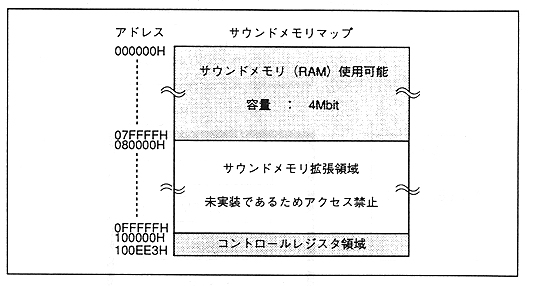

Return to previous page ｜ Return to menu ｜ Go to next page
- Figure 1.3 Memory map of sound memory register

- The sound memory contains the CPU program and data, waveform data, and DSP work area (DSP delay data area).
-
Relationship with D / A converter
- The D / A converter converts the digital audio signal generated by SCSP into an analog audio signal and outputs it.
-
■ Positioning of the sound system
- The sound system (sound CPU, SCSP) can operate independently of the main system (main CPU, video system, etc.) under sound memory. At this time, since the sound system operates on a RAM basis, it is necessary to supply programs and data for the sound CPU from the main system. Furthermore, since video and audio must be synchronized, an interface for mutual communication is also required.
In order to exchange such information, the interface with the main system is installed in SCSP, so it is possible to communicate with the main system.
The sound CPU cannot read or write data from the main system voluntarily. Information exchange with the main system is realized by the main system reading data in the sound system memory (RAM) or writing data into the sound memory.
Return to previous page ｜ Return to menu ｜ Go to next page